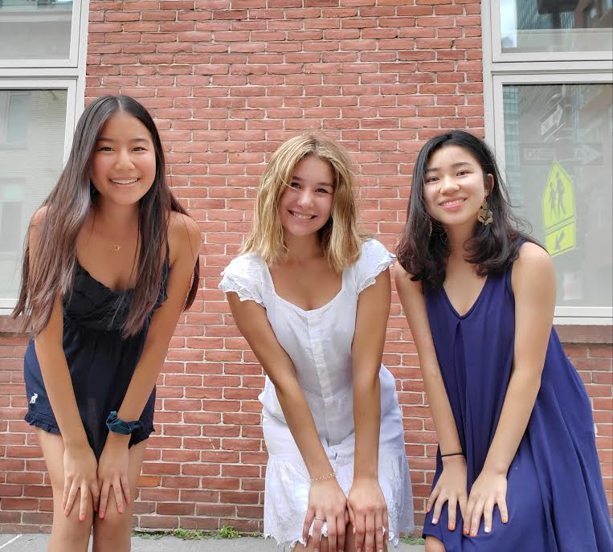
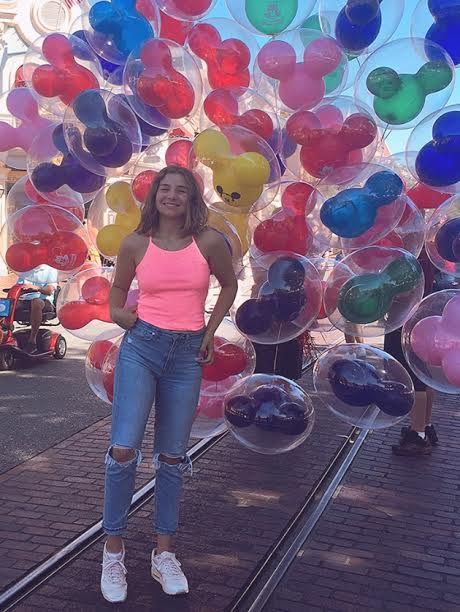
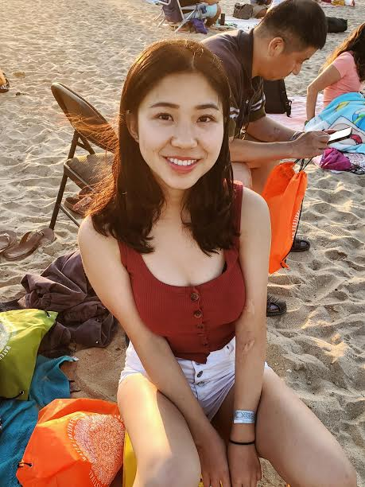
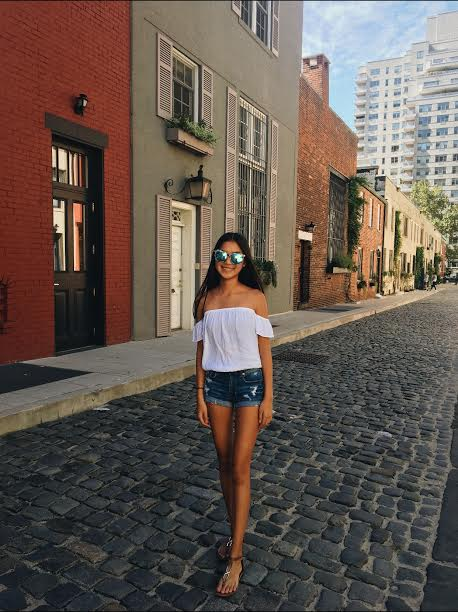

About Us


Ilayda is a rising junior at West Orange High School. In her freetime, she enjoys running, swimming, and listening to music.
Ilayda is currently training for a ten-miler! In the future, she hopes to run a half-marathon.
Ilayda would like to be a Math and Forensics double major. She hopes to become a forensic pathologist.
Kode with Klossy is her first experience using JS, HTML, and CSS.

Ashlynn is a rising senior at Northern Highlands Regional High School. She is a Girls Who Code
and Kode with Klossy alumni and has experience in Python, Arduino C, Gamemaker Studio, HTML, CSS, and JavaScript.
In her free time, she enjoys playing video games and (trying to) bake brownies. Ashlynn is planning to major in computer science.

Charis is a rising junior at Bergen County Academies. She used to play soccer and dance ballet, and she enjoys playing the piano. Kode with Klossy is her first experience with coding, where she learned HTML, CSS, and JavaScript. Charis is planning to pursue a pre-med major.